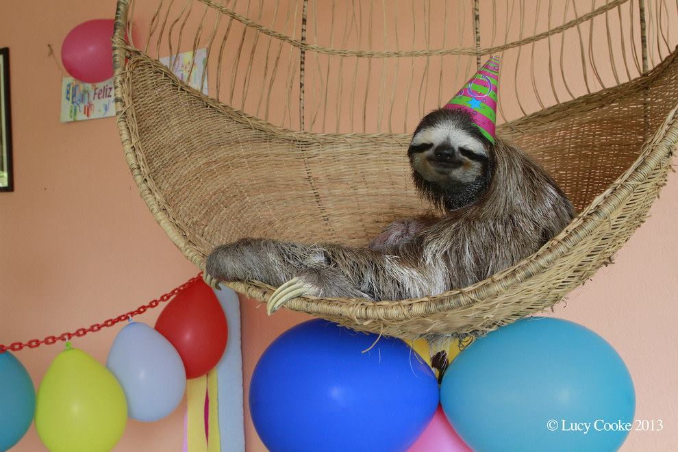

Bradypus variegatus
Of the two families of sloths found in Costa Rica, the Bradypus variegatus (Three-fingered sloth) is the more familiar to most people. Its hair is grayish-brown with a darker face, white forehead and raccoon-like bands on the eyes. The hair on the head tends to form a fringe which frames the face. Its face seems to have the look of contentment and this apparent happy countenance has helped earn its well-deserved popularity. The arms are nearly twice as long as the legs. Slightly shorter body length than the Choloepus hoffmanni (Two-fingered sloth), with a head to tail length between 400–690 mm, it is considerably lighter, weighing a maximum of 6.5 kg.
Active during day and night, it is a strict vegetarian and a selective one at that. Although studies have shown that Bradypus eat up to 96 varieties of leaves, each individual will specialize in only 5 or 6 different tree species. As a result they spend more time in single trees than the Two-fingered sloth. In fact it has been estimated that they change trees once every 2.2 days! Spending long hours in often relatively open canopy, the slow moving sloth would seem to be easy prey for large raptors or snakes. To combat this somewhat the Three-fingered sloth has evolved a specialized neck structure.
Unlike other mammals with 7 cervical vertebrae, Three-fingered sloths have 9 which allows them to rotate their heads up to 300 degrees. This feature allows them to scan for predators without wasting precious moments and energy adjusting body position. Adult males of this species are easily distinguished from females by a distinct pattern of short, pale to bright gold-colored hair on their backs, a black stripe drawn vertically through, with scattered dark spots. These markings are unique to each sloth like fingerprints are to humans and are therefore very useful for individual identification in research.
These animals may live 30 years or more and it is thought that both males and females reach sexual maturity at around 3 years of age. The gestation period, which is not scientifically known, has been guessed to be around six months. A single young is born and for the next eight to twelve months it will be carried and cared for by its mother. During this period the mother teaches the young the location of select food trees in the home range and passes on her own specific tree preferences. After this period the mother moves away and the young sloth inherits the mother’s set of tree preferences on her home range. The mother moves far away from the youngster, but within her own territory for several months and the process begins anew.